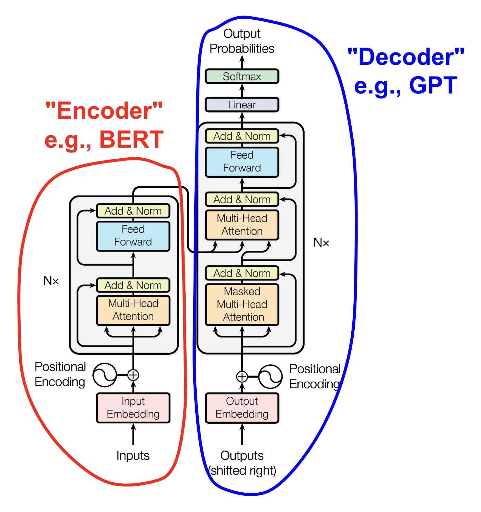
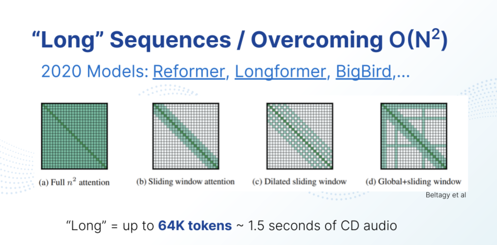
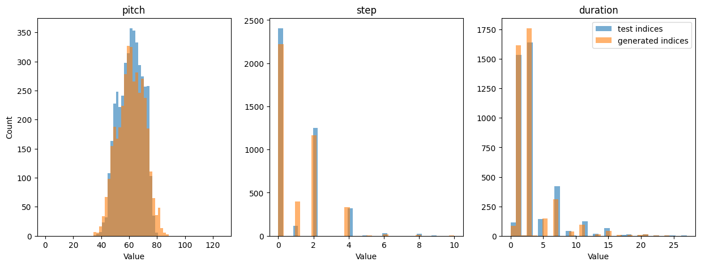

1 Preface
This is a follow-up to an earlier lesson, “To Understand Transformers, Focus on Attention”. If you haven’t read that yet, do. IMHO, it’s really good. ;-) In this lesson, we’ll fill in the “blanks” we left in the Transformer architecture last time, and go on to build a working example.
For that example, let’s do something different from the many other online lessons about working with text & Natural Language Processing (NLP): Let’s make a “Generative Music Transformer.” To keep things “small,” we’ll work in terms of MIDI instead of raw audio. For ideas about trying raw audio, see “Further Study” in Section 10.
Note
The goal of this exercise is to build some understanding, not to build a killer MIDI-generating app. If you want the latter, check out Google Magenta’s paper from 2018, or various extensions since then, such as 2023’s “Multitrack Music Transformer” from a group at UCSD. If you just want to play around with a great MIDI model, check out SkyTNT’s HuggingFace Space. By “some” understanding, I also mean that we’re going to largely ignore the many variants and improvements on Transformers made over the past several years – lately “Mamba” is generating considerable buzz. I find Sebastian Raschka’s posts to be informative about major updates on the Transformer “theme”. Even as improvements are made, the Transformer architecture will continue to form an important part of the conversation about neural network design.
1.1 Managing Expectations
What we’ll end up with is something akin to producing garbled Shakespeare, except it’s going to be musical. Garbled music seems much harder to tolerate than garbled Shakespeare, which is why I have delayed releasing this lesson for multiple months – I’ve kept trying and trying (and trying) to get better results. At this point, I’m resigned to the fact that this is a hard problem (even for MIDI!), and my current outputs are about “as good as they’re going to get”:
It's way harder to train a simple MIDI transformer to sound OK than a next-character GPT-type transformer to create text that makes at least basic sense. MIDI tokenizer choice is a big deal here also.
— Mateusz Modrzejewski (@mamodrzejewski) November 26, 2023
…and we’re going to keep the tokenizer simple.
– Scott H. Hawley, December 2023
Note
In what follows, I’ve often put sections and subsections in expandable “Details” blocks, to enable readers to pick and choose the level of depth they want to see. Enjoy!
2 Intuiting the Rest of the Transformer
The previous lesson left some things out. In this section, we’ll build some intuitive understanding of these other components and a bit of code.
Below is a picture of the original Transformer model diagram, whose parts we will elucidate as we go on. It’s set up like the traditional “encoder-decoder” architecture one often sees in the form of an “hourglass shape”, although it may not be obvious from the Transformer diagram:
{kind=link}

For language translation tasks, both the Encoder (circled in red) and Decoder (circled in blue) are used. For purely “generative” systems like the GPT variants and what we’ll do today, we’ll use the Decoder side. Note however that even the Decoder can involve some encoding, as we combine an embedding of the words / MIDI / “tokens” with Positional Encoding information. PE is discussed below.
We’re going to go through the various components that make up the above diagram. But first, let’s point out something about the Attention mechanism that we skipped over in the previous lesson, namely the computational “cost” associated with making every part of a sequence interact with every other part.
2.1 The Cost of Attention
The attention mechanism per se that we covered in the previous post has a serious drawback: the computational cost scales like the sequence length squared, i.e. for a sequence length of \(N\), the cost is 𝒪(\(N^2)\). This is one reason that Large Language Models can be “Large” – trying to model long sequences results in big matrices!
Details
Various schemes have been proposed to reduce this cost, such as only applying attention over nearby tokens (so-called “sliding window” attention) or other methods that fall under the general heading of “matrix sparsification”. Here’s a slide from a talk I gave a few years ago, illustrating a few of these schemes:

Linear layers with convolution operations, such as with the local receptive fields shown in b) and c). (Source: S.H. Hawley, “Learning Tunable Audio Effects via Neural Networks with Self-Attention”, AES Virtual Symposium: Applications of Machine Learning in Audio, Sep 28, 2020.)
For this lesson, we’ll see how far we can get with the basic \(N^2\) attention. Beyond that, I encourage you to check the literature for whatever the latest/hottest cost-reducing model might be. Popular candidates include FlashAttention and PercieverIO. Even sliding windows are still in use in ways that some people find significant.
2.2 Positional Encoding (aka Positional Embeddings)
Ordinary Feed-Foward layers (and even convolutional layers) don’t come with (much of) a sense of position, but giving them one can improve performance on tasks where ordering and position matters. There are many ways people have endowed such models with position-awareness and… TBH there’s not necessarily a “silver bullet” solution, so a variety of approaches can end up performing about the same. In what follows we’ll describe various schemes for doing PEs.
Details on PE
2.2.1 Some Options for PE
You could just concatenate a “linear ramp” of values to provide some position values, but… you wouldn’t want to do that. See, you don’t just want the values of the PEs to contain positional information, you want the gradients of the PEs to convey positional info too. But a linear ramp has a constant gradient.
There’s the orignal positional encoding from the AIAYN paper, which uses a set of sines & cosines of expontially-increasing wavelength. They tweaked these wavelengths for their use case and ended up with the following equations: \[ \begin{aligned} PE_{(pos,2i)} = \sin(pos / 10000^{2i/d_{model}}) \\ PE_{(pos,2i+1)} = \cos(pos / 10000^{2i/d_{model}}) \end{aligned} \] But the authors of the Transformer paper said they tried a few different PE methods/equations – including letting the model learn the PEs – but found no significant impact on performance between them. Let’s add learned PEs to the list though:
Let the positional embeddings be learned via some trainable mapping. This is the approach that Karpathy uses in his mini-GPT tutorial, and it’s the default approach we’ll use in this lesson.
Francois Fleuret in his “AttentionToy1D” demo, used a simplification of approach #2 by essentially turning it into a set of binary sequences that correspond to the vertices of a hypercube.
“ALiBi” (Attention with Linear Biases) is a method whereby you don’t do positional encoding of the inputs, rather you insert the positional information into the attention calculation itself. It is slightly faster to execute than traditional PE and (probably?) offers less memory overhead, and yields comparable results. I tried it and the results were comparable to those obtained from Option #3 above, so I’ve included ALiBi as a configuration option in the code below.
One scheme, “Relative Position Embeddings,” was reported to make a big difference and it arose in the Music Transformer paper itself. Should we do this? Yes, probably. Are going to do that in this notebook? …Uh….no, but that would be a great exercise for a student!
Rotary Encodings. If you view the PEs not as objects themselves but as a set of transformations, and then you require that these be unitary (i.e., magnitude-preserving) transformations,…one could imagine that might help a bit. Rotary encodings are becoming increasingly prevelent in SOTA models, but in our toy case I hypothesize that any gains from this scheme will be swamped by the error from other sources, and thus unnoticeable. Note that the sines & cosines from the original AIAYN paper (Option #2 above) are reminiscent of the “components” of rotations.
{kind=link}
2.2.2 PE: To Add or Concatenate?
Here’s a design question: Should we add these PEs to our inputs or concatenate them? There are a variety of views on this, such as those described in this video.
Here’s my opinion on this:
Your token embeddings (for the words, or notes, or whatever) are already going to be very high-dimensional. Now, for low-dimensional spaces, adding things up can sort of “destroy” or “obscure” information, but when you’re upwards of 128, 256, 1028 dimensions, etc., then adding ends up being akin to a kind of concatenation anyway (just in some wonky subspace). If you were to concatenate, then sure, your positional info always stays separate from the content. But if you’re going to allow your overall (high-dimensional) embeddings to be learned anyway, then you might as well let the learning dynamic find useful ways to combine the position info with the content info. Otherwise you’re kind of “wasting space” (with concatenation) and doing more calculations than you’d need compared to the “compressed” representation gained by adding learned embeddings.
…But perhaps this is a matter of taste. I’m open to being convinced otherwise!
In the code that follows below, all our embeddigns will be learned and added together, and the position info be treated similarly. But I will add an option to use the “ALiBi” scheme that essentially just moves the PEs to inside the Attention computation.
Tip
A great source of instruction about all things related to Positional Encodings is the YouTube channel, “AI Coffee Break with Letitia”.
2.3 Residual Connections
In the Transformer model diagram of Figure 1, wherever you see arrows going around something and connecting to a yellow “Add & Norm” block, that is indicative of a “skip residual” or just “residual” connection. Readers will likely have seen residual / skip connections in other contexts, so we’ll make this section “Details”-expandable for those who haven’t encountered them.
Details
This is a pretty simple idea that yields payoffs in many areas of numerical modeling: You model the change in something instead of modeling the whole thing. The following flowchart illustrates this:
With neural networks, this residual scheme has the added benefit of allowing for efficient backpropagation. There are claims that “skip residual” connections also help smooth the loss surface, such as this figure in a N(eur)IPS paper from 2017:

Tip
Modeling the change in something rather than the thing itself often yields significant payoffs in many areas of computational modeling. If you want another example of this, consider that diffusion models model the noise added, not the images or latent vectors themselves.
2.4 Multi-Head Attention
We already covered this in the previous lesson so I suggest going there. However, I’ll add a recap as Details here:
Details
Multi-Head Attention simply involves allowing differently-weighted attention operators (called “heads”) to perform attention operations, allowing them to focus on different “senses” of phrases, parts of speech, or in our case, musical structures. The multiple heads are usually just extra dimensions of a big(ger) matrix multiplication, however they can also be implemented in the form of a loop over the heads to save precious GPU RAM.

2.5 Layer Normalization
This is an alternative to Batch Normalization. With BN, we perform elementwise operations where we subtract the mean across the batch dimension and divide by the variance. With LN, instead of doing this across the batch dimension, we do it across the feature dimension(s).

One big advantage of doing our normalization across layers instead of batches is that it allows for small batch sizes. Language models are often large, so they take up a lot of memory, which means you might need very small batches. But small batches will not allow you to do very good batch normalization. So, LayerNorm helps us get good statistics for the mean and variance that we use to normalize.
2.6 Stacking Blocks: Embeddings of Embeddings…of Embeddings
By stacking layers of our transformers, i.e. feeding embeddings into layers that will render them as new embeddings, we will increase the representational power of our model. In terms of code, this is easy to do by looping over a list of layers.
3 The Music (MIDI) Dataset
This section adopts a first-person perspective because I want to convey a personal tone: I confess that I’m “not a MIDI guy,” having always worked with raw audio exclusively. I vastly underestimated how difficult it would be to get decent results. Starting from Google’s well-known MAESTRO dataset of solo piano performances – NOTE: virtuoso piano performances! –I kept downgrading the “difficulty” of the dataset until settling on Bach chorales.
3.1 Learning About MIDI Data
Details
The MAESTRO data wasn’t overly challenging if I only focussed on modeling the pitches, but music is pitch + timing (+ more). What’s more, I’d only ever seen MIDI music “quantized” into a grid-based “piano roll” format with a known time-signature, not realizing that that’s not what MIDI data really is. For our purposes, it’s worth noting that MIDI encodes several pieces of information on a per-note basis:
- What instrument played the note
- What pitch was played – an integer between 0 and 127.
- The start time of the note – in units of the “MIDI clock” which usually ticks at 50,000 times a second. This is typically rendered as a floating-point number when using Python MIDI-processing packages such as Colin Raffel’s pretty-midi (which we will use)
- The end time of the note - another float.
- The “velocity” of the note – e.g. how hard a piano key was struck.
So, no time signature, no quarter-note, half-note, etc. But fine, taking a lead from the Google Tensorflow Demo for RNN Modeling, we can reduce each note to 3 numbers: 1. pitch 2. “step” in time since the previous note 3. duration of the note (i.e. end time minus start time).
…and focus on single-instrument work, and disregard the velocity.
EVEN THAT was too hard for the code below do with MAESTRO. I then noticed a paper by the Google team pointed out that quantizing the time into bins of 8 milliseconds was an ok simplification to make, but even this proved too hard for my model. (I could do 16 ms, but that sounded weird.)
…so…. after surveying other things, I went with Bach Chorales, which actually are presented in piano-roll format quantized to 16th note time intervals. Then I had to convert those from JSON to true MIDI, because by then the rest of my code expected MIDI.
I’ll spare you the details of that process, but note that the data link below is not the official dataset link, it’s my private stash where I converted the JSON to .mid.
3.2 Install and Import
Show the code for system-wide installs
# Somehow you need to install fluidsynth
import platform
import os
def install_package(package_name):
"For installing system binaries on Linux (Ubuntu/Debia) or Mac (via Homebrew)"
if platform.system() == 'Darwin':
os.system(f'brew install {package_name}')
elif platform.system() == 'Linux':
import getpass # NOTE: colab doesn't need a password for sudo
password = getpass.getpass()
command = f"sudo -S apt-get install {package_name}"
os.popen(command, 'w').write(password+'\n')
else:
print("Unsupported Operating System")
# commenting out b/c I keep re-running this notebook
#install_package('fluidsynth')Show the code for pip installs
!pip install -qq gdown pyfluidsynth pretty_midi torch numpy pandas midi-player multiprocessShow the code for imports
# import (most of) what we'll need for the entire lesson
import collections
import datetime
import fluidsynth
import glob
import pandas as pd
import pretty_midi
import torch
from torch import nn, einsum
from torch.nn import functional as F
from torch.utils.data import Dataset, DataLoader
from typing import Optional
from glob import glob
from pathlib import Path
import multiprocess as mp # multiprocess is a Jupyter-compatible fork of multiprocessing
from functools import partial
from tqdm import tqdm # note: Quarto blog won't print output from tqdm.notebook
#from tqdm.contrib.concurrent import process_map # process_map throws errors on Mac :'-(
import random
import numpy as np
import pprint
from IPython.display import display, HTML3.3 Download and Inspect the Data
Show the code for downloading the dataset
# Get the data
data_source = 'jsb_chorales_midi'
# TODO: add options for MAESTRO, others
data_dir = Path('midi_data') # generic name for whatever midi we might want
REST_PITCH = 127 # special code used to denote rests
!gdown -O {data_source}.tgz 1MdJiNEgtkvCx9tnyQWcnEE5GPMY6ADUb
!tar zxf {data_source}.tgz; rm -rf midi_data; ln -s {data_source} midi_data ;
# get the list of MIDI filenames
filenames = sorted(glob(str(data_dir/'**/*.mid*'),recursive=True))
print('Number of files:', len(filenames))Downloading...
From: https://drive.google.com/uc?id=1MdJiNEgtkvCx9tnyQWcnEE5GPMY6ADUb
To: /Users/shawley/github/blog/posts/jsb_chorales_midi.tgz
100%|████████████████████████████████████████| 137k/137k [00:00<00:00, 7.18MB/s]
Number of files: 382Let’s inspect one of the files – using the MIDIPlayer object created especially for this lesson!
Show the code for MIDI player usage
from midi_player import MIDIPlayer
from midi_player.stylers import general, dark # I like dark mode
midi_file = filenames[0]
MIDIPlayer(midi_file, 360, styler=dark, title=f"midi_file = {midi_file}")
Note
Sometimes the MIDIPlayer’s piano roll view will appear blank if the notes are below the bottom of the visible frame. Scroll downward inside the player to reveal all the notes. The piano roll also scrolls left & right.
Let’s load a single file and convert it to a PyTorch tensor called notes_tensor, and we’ll go ahead and convert “start” and “end” times “step” and “duration” times. So, displaying the first several notes (using a pandas dataframe for style) we see…
Show the code that made Table 1
# TODO: Now that the encoder uses rouding/nearest neighbors, we could save the time-quantization for later.
# That sets us up for vector quantization approaches
def quantize_times(times,
res_ms=8, # resolution in milliseconds. 8ms was deemed sufficient for MAESTRO.
clamp_range_s=[0.0,4.0]):
quant_step = res_ms / 1000.0
q_times = torch.round(times / quant_step) * quant_step
if clamp_range_s is not None:
q_times = torch.clamp(q_times, clamp_range_s[0], clamp_range_s[1])
return q_times
def midi_file_to_tensor(filenames, i=None, keep_start_end=False, rest_pitches=[REST_PITCH]): # filenames could just be a single filename
midi_file = filenames if i is None or type(filenames)==str else filenames[i]
"reads a single midi file and converts it to tensor with elements (pitch, step, duration)"
pm = pretty_midi.PrettyMIDI(midi_file) # read in the whole file. this can be very slow for long MIDI files (e.g. in MAESTRO)
# Sort the notes first by start time (and then by pitch if two notes start at the same time)
sorted_notes = sorted(pm.instruments[0].notes, key=lambda note: (note.start, note.pitch))
#notes = torch.empty( (len(sorted_notes), 3 + 2*keep_start_end), dtype=torch.float32 ) # allocate storage
prev_start = sorted_notes[0].start
notes = []
for i, note in enumerate(sorted_notes):
new_note = torch.empty( (3 + 2*keep_start_end) , dtype=torch.float32)
if int(note.pitch) in rest_pitches: continue # we can actually delete the rests!
new_note[0] = note.pitch
new_note[1] = note.start - prev_start # step, i.e. time since start of previous note
new_note[2] = note.end - note.start # duration
if keep_start_end: # might find it useful be able to keep these for easier analysis later
new_note[3] = note.start
new_note[4] = note.end
prev_start = note.start
notes.append(new_note)
notes = torch.vstack(notes)
notes[:,1:] = quantize_times(notes[:,1:])
return notes
notes_tensor = midi_file_to_tensor(midi_file)
pd.set_option('display.notebook_repr_html', True)
notes_df = pd.DataFrame(notes_tensor, columns=['pitch','step (s)','duration (s)']) # actually df's look nicer
# making it look better in the blog: adjust width of pandas dataframes
display(HTML('''
<style>
.dataframe {
width: 40%; /* Adjust this value as needed */
margin-left: auto;
margin-right: auto;
}
.dataframe th, .dataframe td {
text-align: center;
width: auto !important;
}
table {
margin-left: auto;
margin-right: auto;
}
th, td {
text-align: center;
min-width: 100px; /* Or any other width */
}
</style>
'''))
HTML(notes_df[:8].to_html(index=False))notes_tensor
| pitch | step (s) | duration (s) |
|---|---|---|
| 53.0 | 0.00 | 0.48 |
| 57.0 | 0.00 | 0.48 |
| 60.0 | 0.00 | 1.44 |
| 65.0 | 0.00 | 0.48 |
| 52.0 | 0.48 | 0.48 |
| 55.0 | 0.00 | 0.48 |
| 72.0 | 0.00 | 0.24 |
| 70.0 | 0.24 | 0.24 |
We’ll convert those floating point numbers to integer indices in “codebooks” via the “tokenizer” below.
Now we’ll load each song into an entry in a list called notes_tensor_list:
Show the code
def files_to_tensor_list(filenames, keep_start_end=False, serial=True):
"Reads MIDI files in parallel so should be reasonably fast. JSB Chorales are no prob but for MAESTRO you want this"
# tensor_list = process_map(midi_file_to_tensor, filenames, max_workers=mp.cpu_count(), chunksize=1) # Doesn't work on Mac
tensor_list = []
max_ = len(filenames)
if serial:
for i, filename in enumerate(tqdm(filenames)):
tensor_list.append(midi_file_to_tensor(filename, keep_start_end=keep_start_end))
else:
with mp.Pool(processes=mp.cpu_count()) as p:
with tqdm(total=max_) as pbar:
for r in p.imap_unordered(partial(midi_file_to_tensor, filenames, keep_start_end=keep_start_end), range(0, max_)):
tensor_list.append(r)
pbar.update()
return tensor_list
notes_tensor_list_filename = f'{data_source}_tensor_list.pt' # we'll save the result to a file for easier re-reading next time
read_all_midi_files = not os.path.exists(notes_tensor_list_filename) # check to see if it already exists
if read_all_midi_files:
notes_tensor_list = files_to_tensor_list(filenames, serial=True)
torch.save(notes_tensor_list, notes_tensor_list_filename) # save for next time
else:
notes_tensor_list = torch.load(notes_tensor_list_filename) # just read from the last time we made one
print(f"\nlen(notes_tensor_list) = {len(notes_tensor_list)}")100%|██████████████████████████████████████████████████████████████████████████████████████████| 382/382 [00:02<00:00, 148.46it/s]
len(notes_tensor_list) = 382Also, let’s make a single tensor all_notes out of all the notes. We’re only going to use this for analysis purposes; for everything else we’ll use the notes_tensor_list, which…I’m now going to abbreviate as notes_tl
notes_tl = notes_tensor_list
all_notes = torch.vstack(notes_tl).type(torch.float32)
print("all_notes.shape = ",all_notes.shape)all_notes.shape = torch.Size([78349, 3])3.4 Making a Tokenizer: Codebooks
Rather than try something sophisticated like calling MidiTok, we’re going to treat this like a “char-level RNN” and just regard each note as a “parallel” group of 3 tokens (i.e., one token each for pitch, step, and duration). This means that we will need 3 “codebooks” that can encode & decode between real-world values and their indices in the codebooks.Details
For the pitch values, it’s pretty easy since there are up to 128 MIDI pitches. Probably they won’t all be used, so we could limit the range of pitches, however, I’m going to want to do some pitch-bending data augmentation, so the pitch tokens will just be int versions of their floats, i.e., indices in a 128-dimensional space.
For the timing – which I don’t plan to do any augmentation of – we’ll just write down what unique values are present. These will form the “vocabularies” that we often see used in NLP settings.
Oh, also: The timing values end up being reaaalllly long in some cases. Like, notes with 15 seconds in duration? I’m going to go ahead an clamp those to a maximum value of 4 seconds.
Show the code
def make_codebooks(all_notes, verbose=False):
codebooks = []
n_codebooks = all_notes.shape[-1] # should be 3
for i in range(n_codebooks):
if i==0: # i=0 means pitch
cb_vals = torch.arange(128) # just use all possible pitches. could limit to min/max range but...not gonna.
else: # i!=0 means timing
cb_vals = all_notes[:,i].unique().sort()[0]
if verbose: print(f"\n---\ncb {i}: cb_vals = {cb_vals}")
codebooks.append(cb_vals)
return codebooks
all_notes[:,1:] = quantize_times(all_notes[:,1:]) # we should already be time-quantized so this should be unnecessary, but...just in case
codebooks = make_codebooks(all_notes, verbose=False)
vocab_sizes = [len(cb) for cb in codebooks]
display(HTML(f"Codebook sizes = {vocab_sizes}<br><br>"))
###--- From here down, it's just a nice way to display the codebooks in the blog post:
df1 = pd.DataFrame(codebooks[1].numpy(), columns=['steps (s)'])
df2 = pd.DataFrame(codebooks[2].numpy(), columns=['durations (s)'])
display(HTML(f"Codebooks for steps & durations are {'' if df1.equals(df2) else 'not '}the same:"))
html1, html2 = df1.to_html(index=False), df2.to_html(index=False)
# Combine HTML strings with a space in between
combined_html = f'''<div style="width: 100%; text-align: center;">
<table style="margin-left: auto; margin-right: auto;"> <tr>
<td style="vertical-align: top;">{html1}</td>
<td style="width: 50px;"></td>
<td style="vertical-align: top;">{html2}</td>
</tr></table></div>'''
# Display the combined HTML
display(HTML(combined_html))
Codebook sizes = [128, 15, 28]
Codebooks for steps & durations are not the same:
|
|
3.4.1 Encoding and Decoding
Now we need routines to encode and decode, i.e., to convert back and forth between real-world values and codebook indices.
Note
Since the quantities we’re tokenizing are numerical, we don’t need key-value pairs as you might see in NLP applications. (Thus we can avoid KeyErrors. ;-) ) Rather, for encoding, we can use a simple “argmin” on the “distances” between new values and codebook values. Then decoding will simply be a matter of inserting the index into the array of codebook values. This is like Vector Quantization, except it’s only one dimension (so “scalar quantization”?). For codebooks in high-dimensional spaces, typically VQ methods will use (Approximate) Nearest Neighbors or Locality Sensitive Hashing, but since we’re just in 1-D, simple argmin is fine.
Show the (Token) Encoder/Decoder code (i.e., real-world values <–> codebook indices)
def encode_one_cb(seq:torch.Tensor, cb:torch.Tensor) -> int:
""" Encodes one 'column' of note info (either pitches, steps, or durations)
given new value(s) and codebook, return argmin of the difference
Difficulty: seq and cb may have different lengths & may not broadcast,
thus I wrote a loop that broadcasts each note over all cb values
"""
sidx = torch.empty( seq.shape, dtype=int, device=seq.device)
for i, note in enumerate(seq): # note: this is trivially parallel but jupyter mp hangs for me :'-(
sidx[i] = torch.argmin( ( note - cb )**2, dim=0 ) # could use torch.abs() instead of ^2 since we're in 1-D, but I want this to be general
return sidx
def decode_one_cb(xi, cb:torch.Tensor) -> torch.Tensor:
"""Decodes one 'column' of note-index info (either pitch_i, step_i, or duration_i)
xi should be an int, a list of ints, or a tensor of ints"""
return cb[xi]
def encode(seq:torch.Tensor, cbs=codebooks) -> torch.Tensor:
"Encodes a sequence of notes, where each note is (pitch, step, dur)"
assert len(seq.shape) == 2, "Not set up for batch processing yet, but could be a fun exercise for a student ;-) "
encoded = torch.empty( seq.shape, dtype=int, device=seq.device)
for i, cb in enumerate(cbs):
encoded[:,i] = encode_one_cb( seq[:,i], cb)
return encoded
def decode(sidx:torch.Tensor, cbs=codebooks) -> torch.Tensor:
"Decodes a sequence of integer indices for notes (pitch_i, step_i, dur_i)"
assert len(sidx.shape) == 2, "Not set up for batch processing yet, but could be a fun exercise for a student ;-)"
decoded = torch.empty( sidx.shape, dtype=torch.float32, device=sidx.device)
for i, cb in enumerate(cbs):
decoded[:,i] = decode_one_cb( sidx[:,i], cb)
return decoded
# Let's do a little test to see if we get back what we encode
midi_seq = all_notes[0:8].clone()
print("Before encoding, midi_seq =\n",midi_seq)
token_list = encode(midi_seq)
print("After encoding, token_list =\n",token_list)
return_seq = decode(token_list)
print("After decoding, return_seq =\n",return_seq)
assert torch.equal( midi_seq, return_seq), f"Oops. midi_seq={midi_seq}, but return_seq={return_seq}. Should be the same"
# "safety" check re. values that exceed codebook range -- should get truncated to last cb entry
midi_seq[-1,-1] = 100.0 # give the last time a huge value to check that our mapper won't crash
token_list = encode(midi_seq, codebooks) # if it doesn't crash, we're good
assert token_list[-1,-1] == len(codebooks[-1])-1, f"Big value ({midi_seq[-1,-1]}) should have gotten the last spot in the last codebook ({len(codebooks[-1])-1}) but came back as {token_list[-1,-1]}"
print("Preliminary Encoding/Decoding checks pass! :-)")Before encoding, midi_seq =
tensor([[53.0000, 0.0000, 0.4800],
[57.0000, 0.0000, 0.4800],
[60.0000, 0.0000, 1.4400],
[65.0000, 0.0000, 0.4800],
[52.0000, 0.4800, 0.4800],
[55.0000, 0.0000, 0.4800],
[72.0000, 0.0000, 0.2400],
[70.0000, 0.2400, 0.2400]])
After encoding, token_list =
tensor([[53, 0, 3],
[57, 0, 3],
[60, 0, 11],
[65, 0, 3],
[52, 4, 3],
[55, 0, 3],
[72, 0, 1],
[70, 2, 1]])
After decoding, return_seq =
tensor([[53.0000, 0.0000, 0.4800],
[57.0000, 0.0000, 0.4800],
[60.0000, 0.0000, 1.4400],
[65.0000, 0.0000, 0.4800],
[52.0000, 0.4800, 0.4800],
[55.0000, 0.0000, 0.4800],
[72.0000, 0.0000, 0.2400],
[70.0000, 0.2400, 0.2400]])
Preliminary Encoding/Decoding checks pass! :-)3.4.2 Checking Encoding & Decoding, ‘Playing’ Tensors
Before moving on, it’s a good idea to double check: Can we really encode and decode an entire midi sequence? Let’s write some more utility files. Notably the midiplayer() routine which will allow us to play our PyTorch tensors directly in this notebook.
Show the code
def get_start_end(notes:torch.Tensor) -> torch.Tensor:
"integrates (step,duration) timing pairs to recover (start,end) info. concats them as new columns"
newnotes = torch.empty((len(notes), 5), dtype=notes.dtype, device=notes.device)
newnotes[:,:3] = notes[:,:3]
prev_start = 0.0
for i, note in enumerate(notes):
step, dur = note[1], note[2]
start = step + prev_start
end = start + dur
newnotes[i,3], newnotes[i,4] = start, end
prev_start = start
return newnotes
def notes_to_midi(notes:torch.Tensor,
time_rescale=None,
out_file: str = '',
instrument_name: str = 'Acoustic Grand Piano',
velocity: int = 64, # default loudness for all notes
) -> pretty_midi.PrettyMIDI:
notes = notes.clone() # just to avoid weird overwrites of memory addresses
if notes.min() < 0.0:
print("WARNING: You have negative pitches, steps or durations. Setting them to zero")
notes = notes * (notes >= 0) # ReLU on all quantities
if time_rescale is not None: # added because sometimes I want to slow/speed up
notes[:,1:] = notes[:,1:] *time_rescale
pm = pretty_midi.PrettyMIDI()
instrument = pretty_midi.Instrument( program=pretty_midi.instrument_name_to_program(instrument_name) )
if notes.shape[-1] < 5: notes = get_start_end(notes) # figure out start,end times from step,dur, concat as new columns
notes = notes.cpu().numpy()
for note in notes:
midi_note = pretty_midi.Note( velocity=velocity, pitch=int(note[0]), start=note[3], end=note[4], )
instrument.notes.append(midi_note)
pm.instruments.append(instrument)
if out_file: pm.write(out_file)
return pm
def midiplayer(notes_tensor, height=400, time_rescale=None, midi_file="/tmp/tmp.mid", title='', styler=dark):
"MIDIplayer that writes input tensor to temporary file"
pm = notes_to_midi(notes_tensor, time_rescale=time_rescale, out_file=midi_file)
return MIDIPlayer(midi_file, height, styler=dark, dl=True, title=title)We’re going to encode & decode, and write to a MIDI file, and play that midi file. Using the same file as above:
midiplayer(decode(encode(midi_file_to_tensor(filenames[0]))), title='Encode-Decode Test')Yay! Moving on…
3.5 Making PyTorch Dataset(s)
Our particular dataset already comes with a test/train/valid split in its subdirectories, so let’s use that split. We’ll go ahead and re-load the files:
Show the code
# tensor lists
train_filenames = [x for x in filenames if '/train' in x]
val_filenames = [x for x in filenames if '/val' in x]
test_filenames = [x for x in filenames if '/test' in x]
train_notes_tl = files_to_tensor_list(train_filenames, serial=True)
val_notes_tl = files_to_tensor_list(val_filenames, serial=True)
test_notes_tl = files_to_tensor_list(test_filenames, serial=True)
for name, tl in zip(['train','val','test'],[train_notes_tl, val_notes_tl, test_notes_tl]):
stack = torch.vstack(tl)
print(f"{len(tl)} songs in {name}, {stack.shape[0]} notes")100%|██████████████████████████████████████████████████████████████████████████████████████████| 229/229 [00:01<00:00, 145.31it/s]
100%|████████████████████████████████████████████████████████████████████████████████████████████| 76/76 [00:00<00:00, 152.73it/s]
100%|████████████████████████████████████████████████████████████████████████████████████████████| 77/77 [00:00<00:00, 142.14it/s]229 songs in train, 46660 notes
76 songs in val, 15052 notes
77 songs in test, 16637 notes…that’s not a ton of data. We should include some data augmentation.
3.5.1 Data Augmentation
We’ll augment the pitch values by raising & lowering them within an octave, except we’ll leave the rest pitch (=127 for the JSB chorales) alone since that sometimes gets used as a rest. And we’ll leave the timing values alone.
Show the Data Augmentation code
def augment_data(data, pitch_shift=12, debug=True, extra_augs=False):
datanew = data.clone() # avoid overwriting memory of data
# pitch
change = torch.randint(-pitch_shift, pitch_shift, (1,)) # how many semitones to change all the pitches
datanew[ datanew[:,0] != REST_PITCH ] += torch.tensor((change, 0, 0)) # change the pitches
if extra_augs:
if torch.rand(1) < 0.2: # sometimes invert pitches? Probably not useful but anyway
datanew[ datanew[:,0] != REST_PITCH ] *= torch.tensor((-1, 1, 1))
datanew[ datanew[:,0] != REST_PITCH ] += torch.tensor((127, 0, 0))
# time - if we sometimes increase each non-zero time-token by one, that should be ok, right?
if torch.rand(1) < 0.2: # do step
datanew[ datanew[:,1] > 0] += torch.tensor((0,1,0))
if torch.rand(1) < 0.2: # do duration
datanew[ datanew[:,2] > 0] += torch.tensor((0,0,1))
# extra 'safety' constraint: clamp to range of valid values (of tokens)
for i, cb in enumerate(codebooks):
datanew[:,i] = torch.clamp(datanew[:,i], 0, len(cb)-1)
return datanew
# A couple quick tests:
torch.manual_seed(3) # setting this just to make sure something happens ;-)
data = torch.tensor([[54,12,6],[61,0,40],[REST_PITCH,14,4],[86,0,12],[126,7,12]])
print("data.shape = ",data.shape)
print("original data = \n",data)
aug = augment_data(data)
print("augmented data = \n",aug) #
assert not torch.equal(aug[:,0], data[:,0]), "Oops, nothing changed"
assert aug[2,0]==data[2,0], "Oops, The REST_PITCH got changed"
print("Checks passed! :-) ")data.shape = torch.Size([5, 3])
original data =
tensor([[ 54, 12, 6],
[ 61, 0, 40],
[127, 14, 4],
[ 86, 0, 12],
[126, 7, 12]])
augmented data =
tensor([[ 52, 12, 6],
[ 59, 0, 27],
[127, 14, 4],
[ 84, 0, 12],
[124, 7, 12]])
Checks passed! :-) 3.5.2 PyTorch Dataset Object Definition
Now we’re ready to define our Dataset class/object. We’re going to yield input, target pairs of token sequences in which the targets have been shifted by one token so the model learns to predict what comes next. This method is called “Teacher Forcing” by the way. (I didn’t know it needed a name; seems like regular Supervised Learning to me!)
Show the Pytorch Dataset code
class NotesDataset(Dataset):
"simple custom dataset of sliding windows"
def __init__(self,
tensor_list,
seq_length:int,
tokenizer=encode,
codebooks=codebooks,
aug_callback=augment_data,
len_mult=100, # factor to 'fudge' the dataset length when it's inspected by DataLoaders
pad=True, # pad end with rests
):
super().__init__()
self.sl = seq_length
self.len_mult = len_mult
self.data_list = [tokenizer(t) for t in tensor_list] # Encode everything at the start; encoded tokens are all we'll use
if pad:
rests = torch.tensor([REST_PITCH,1,1]).unsqueeze(0).tile((seq_length,1))
self.data_list = [torch.cat((toks,rests), dim=0) for toks in self.data_list]
self.aug_callback = aug_callback
def __len__(self):
"""we're going to be grabbing random windows from the data, so just the len of the tensor
list will be too small for large batch sizes, hence we multiply by len_mult"""
return len(self.data_list)*self.len_mult # this will keep the DataLoader going longer
def __getitem__(self, idx, shift=1) -> (torch.Tensor, torch.Tensor):
"grabs a random 'window' from a random song, with an offset of `shift` tokens between inputs and targets"
i_song = torch.randint(0, len(self.data_list), (1,)) # pick a song
ix = torch.randint(0, len(self.data_list[i_song]) - self.sl - 1, (1,)) # start of window within song
data_block = self.data_list[i_song][ix:ix+self.sl+1] # grab window plus an extra character
if self.aug_callback is not None:
data_block = self.aug_callback(data_block)
inputs, targets = data_block[:self.sl], data_block[shift:self.sl+shift]
return inputs, targets
seq_length = 64
train_ds = NotesDataset(train_notes_tl, seq_length)
val_ds = NotesDataset(val_notes_tl, seq_length, aug_callback=None, len_mult=1000000) # no aug, neverending
# save test_ds for Evaluation section, later
print(f"Dataset lengths: Train: {len(train_ds)} notes, Validation: {len(val_ds)} notes.")Dataset lengths: Train: 22900 notes, Validation: 76000000 notes.Now we can use the Dataset instances to create DataLoader objects. Since the latter may involve random shuffling, let’s seed all the Random Number Generators for the sake of reproducibility.
Show the RNG-setting & DataLoader code
# set RNG seeds for reproducibility.
def set_seeds(seed):
torch.manual_seed(seed)
np.random.seed(seed)
random.seed(seed)
if torch.cuda.is_available():
torch.cuda.manual_seed(seed)
torch.cuda.manual_seed_all(seed)
set_seeds(0)
batch_size = 128 # We may change this further down, for now it's just a test
train_dl = DataLoader(train_ds, batch_size=batch_size, shuffle=True)
val_dl = DataLoader(val_ds, batch_size=batch_size, shuffle=False, )
batch_x, batch_y = next(iter(train_dl))
print("Checking batch shapes: batch_x.shape, batch_y.shape = ",batch_x.shape, batch_y.shape)Checking batch shapes: batch_x.shape, batch_y.shape = torch.Size([128, 64, 3]) torch.Size([128, 64, 3])Ok. Now that we have a feel for how to handle our data, let’s get set up for the Transformer!
4 Hyperparameters / Model Configuration
Here’s where we’ll put all of our architecture design variables, storing them in a dict-like “dataclass” object for easy passing around.
Show the config-creation code
from dataclasses import dataclass
@dataclass
class MusicBoxConfig:
# model architecture details
seq_length: int = 64
batch_size: int = 128
n_embd: int = 128 # embedding dimension to use for tokens & positions
n_heads: int = 8 # number of attention heads
n_blocks: int = 4 # number of attention blocks
dropout: float = 0.2 # dropout value applied everywhere. since JSB is a small dataset, let's use more than usual
bias: bool = False # True: bias in Linears and LayerNorms, like GPT-2. False: a bit better and faster
use_alibi: bool = False # use ALiBi PE scheme
# training details
learning_rate: float = 0.001
weight_decay: float = 0.01 # 0.01 is pytorch default
epochs: int = 20
# other handy bookkeeping
vocab_sizes: tuple = tuple(vocab_sizes)
config = MusicBoxConfig()
pp = pprint.PrettyPrinter(indent=4)
pp.pprint(config)MusicBoxConfig(seq_length=64,
batch_size=128,
n_embd=128,
n_heads=8,
n_blocks=4,
dropout=0.2,
bias=False,
use_alibi=False,
learning_rate=0.001,
weight_decay=0.01,
epochs=20,
vocab_sizes=(128, 15, 28))5 Transformer Model Code
I did write my own Transformer code(s) – honest! – but in the quest to get better results, I increasingly borrowed from Andrej Karpathy’s lesson code (feeling like the “Salieri” to his “Mozart”), to the point where the following is really a set of minor modifications, such as my added support for multiple codebooks, and passing around the config.
Details
# from my mod of Karpathy's code.
# Unless otherwise noted, anything good in what follows was pasted
# from https://github.com/karpathy/minGPT and adapted by Scott H. Hawley (SHH)
def create_alibi_mask(n):
"SHH: added this after the fact to demo ALiBi support"
mat = torch.zeros((n, n))
# Iterate over the lower triangular indices (excluding the diagonal)
for i in range(1, n):
for j in range(i):
mat[i, j] = -(i - j)
# Create a mask for the upper triangular part, excluding the diagonal
mask = torch.triu(torch.ones_like(mat), diagonal=1)
mat[mask.bool()] = float('-inf') # Apply mask, set upper triangular -inf
return mat
class Head(nn.Module):
""" one head of self-attention
SHH: Note: Often Multi-head Attention is done all at once via one big matrix multiply,
but Karpathy (perhaps for reasons of clarity or to keep VRAM usage low)
implemented each Head separately and then looped over them.
"""
def __init__(self, head_size, config):
super().__init__()
n_embd, block_size = config.n_embd, config.seq_length
self.key = nn.Linear(n_embd, head_size, bias=False)
self.query = nn.Linear(n_embd, head_size, bias=False)
self.value = nn.Linear(n_embd, head_size, bias=False)
self.use_alibi = config.use_alibi
if self.use_alibi:
self.register_buffer('alibi', create_alibi_mask(block_size))
else:
self.register_buffer('tril', torch.tril(torch.ones(block_size, block_size)))
self.dropout = nn.Dropout(config.dropout)
def forward(self, x):
B,T,C = x.shape
k = self.key(x) # (B,T,C)
q = self.query(x) # (B,T,C)
# compute attention scores ("affinities")
wei = q @ k.transpose(-2,-1) * C**-0.5 # (B, T, C) @ (B, C, T) -> (B, T, T)
if self.use_alibi:
wei = wei + self.alibi[:T,:T]
else:
wei = wei.masked_fill(self.tril[:T, :T] == 0, float('-inf')) # (B, T, T)
wei = F.softmax(wei, dim=-1) # (B, T, T)
wei = self.dropout(wei)
# perform the weighted aggregation of the values
v = self.value(x) # (B,T,C)
out = wei @ v # (B, T, T) @ (B, T, C) -> (B, T, C)
return out
class MultiHeadAttention(nn.Module):
""" multiple heads of self-attention in parallel
SHH: As noted above, typically MHA is one big matmul (as in my original code),
but Karpathy looped over heads so we'll do that.
"""
def __init__(self, num_heads, head_size, config):
super().__init__()
n_embd = config.n_embd
self.heads = nn.ModuleList([Head(head_size, config) for _ in range(num_heads)])
self.proj = nn.Linear(n_embd, n_embd)
self.dropout = nn.Dropout(config.dropout)
def forward(self, x):
out = torch.cat([h(x) for h in self.heads], dim=-1)
out = self.dropout(self.proj(out))
return out
class FeedFoward(nn.Module):
""" a simple linear layer followed by a non-linearity """
def __init__(self, n_embd, config):
super().__init__()
self.net = nn.Sequential(
nn.Linear(n_embd, 4 * n_embd),
nn.ReLU(),
nn.Linear(4 * n_embd, n_embd),
nn.Dropout(config.dropout),
)
def forward(self, x):
return self.net(x)
class Block(nn.Module):
""" Transformer block: communication followed by computation
SHH: Note: The ordering of the LayerNorm ops has differed in different Transformer implementations
Some have pointed out that the original Transformer architecture diagram didn't match the code
"""
def __init__(self, n_embd, n_head, config):
# n_embd: embedding dimension, n_head: the number of heads we'd like
super().__init__()
head_size = n_embd // n_head
self.sa = MultiHeadAttention(n_head, head_size, config)
self.ffwd = FeedFoward(n_embd, config)
self.ln1 = nn.LayerNorm(n_embd)
self.ln2 = nn.LayerNorm(n_embd)
def forward(self, x):
x = x + self.sa(self.ln1(x))
x = x + self.ffwd(self.ln2(x))
return x
class Transformer(nn.Module):
""" Main Transformer class, from Karpathy's "BigramLanguageModel" class.
SHH added the looping over multiple codebooks / vocabs
"""
def __init__(self, config, debug=False):
super().__init__()
n_cb = len(config.vocab_sizes)
self.block_size, n_embd, n_head, n_layer, self.use_alibi = config.seq_length, config.n_embd, config.n_heads, config.n_blocks, config.use_alibi
# seperate embeddings for pitch, step & dur part of notes
self.token_embedding_tables = nn.ModuleList([nn.Embedding(vocab_sizes[cbi], n_embd) for cbi in range(n_cb)])
if not config.use_alibi: self.position_embedding_table = nn.Embedding(self.block_size, n_embd)
self.blocks = nn.Sequential(*[Block(n_embd, n_head, config) for _ in range(n_layer)])
self.ln_f = nn.LayerNorm(n_embd) # final layer norm
self.lm_heads = nn.ModuleList([nn.Linear(n_embd, vocab_sizes[cbi]) for cbi in range(n_cb)]) # output token predictors
self.debug=False
def forward(self, idx, targets=None):
# idx is array of input token indices in the current context
B, T, CBS = idx.shape
tok_emb = 0
for cb in range(CBS): # just sum codebook reps
tok_emb = tok_emb + self.token_embedding_tables[cb](idx[:,:,cb])
x = tok_emb
if not self.use_alibi:
pos_emb = self.position_embedding_table(torch.arange(T, device=idx.device)) # (T,E)
x = x + pos_emb # sum token embeddings & positional embeddings
x = self.blocks(x) # Main computation loop!
x = self.ln_f(x) # final layernorm
logits_list = [head(x) for head in self.lm_heads] # list of output projections over all codebook values
if targets is None: # need targets to compute loss
loss = None
else:
lambdas = [0.5]*CBS # relative "weights" to pitch, step, dur parts of loss. TODO: Should be in config as hyperparams
loss = 0.0
for cb in range(CBS): # loop over codebooks (for pitch, step & dur), summing loss
logits = logits_list[cb]
B, T, V = logits.shape # V = vocab size, i.e. codebook length
targ = targets[:,:,cb] # B, T
logits = logits.view(B*T, V)
targ = targ.reshape(B*T) # needs reshape & not view b/c of contiguous memory issues.
loss = loss + lambdas[cb] * F.cross_entropy(logits, targ)
return logits_list, loss
@torch.no_grad()
def generate(self, idx, max_new_tokens, temperature=1.0):
# idx is (B, T, CBS) array of token indices in the current context
for _ in range(max_new_tokens):
idx_cond = idx[:, -self.block_size:] # crop idx to the last block_size tokens
logits_list, loss = self(idx_cond) # get the predictions
idx_next_list = []
for cb in range(idx_cond.shape[-1]):
# focus only on the last time step
logits = logits_list[cb] # B, T, V where V = vocab/embedding size
logits = logits[:, -1, :] # get last time. becomes (B, V)
# apply softmax to get probabilities
probs = F.softmax(logits/temperature, dim=-1) # (B, V)
# sample from the distribution
idx_next_list.append(torch.multinomial(probs, num_samples=1)) # (B, 1)
idx_next = torch.tensor(idx_next_list).unsqueeze(0).unsqueeze(0).to(idx.device)
# append sampled index to the running sequence
idx = torch.cat((idx, idx_next), dim=1) # (B, T+1)
return idx
# test that, make sure we don't get any errors:
model = Transformer(config)
print(sum(p.numel() for p in model.parameters())/1e6, 'M parameters in the model') 0.843947 M parameters in the model6 Preliminaries Before Training
GPU device, Demo prompts, Clean re-initDetails
6.1 Set Up the GPU/CPU device
device = "cuda" if torch.cuda.is_available() else "mps" if torch.backends.mps.is_available() else "cpu"
print("device is",device)device is mps6.2 Prompt for Demos
Let’s create a “prompt” from the validation dataset so we can monitor the models capabilities in producing “demos” of the music
Show the code
demo_prompt_idx = 0 # file index from which to pull the demo prompt
demo_target = val_notes_tl[demo_prompt_idx]
display(midiplayer(demo_target, title=f"Full demo 'target', {len(demo_target)} notes in length"))
demo_prompt_length = 16 # number of notes in demo prompt context
demo_max_new_tokens = min(150, len(demo_target)) # try to make the whole song, but don't go on too long
prompt = demo_target[:demo_prompt_length]
display(midiplayer(prompt, title=f"{demo_prompt_length}-note 'prompt' for demos"))
prompt_tokens = encode(prompt).unsqueeze(0).to(device)6.3 (Re-)Init Things
Just to keep things ‘clean’, re-setup the datasets & loaders for good measure, instantiate a model and optimizer.
set_seeds(0)
train_ds = NotesDataset(train_notes_tl, config.seq_length, len_mult=config.batch_size)
val_ds = NotesDataset(val_notes_tl, seq_length, aug_callback=None, len_mult=1000000) # no aug, neverending
train_dl = DataLoader(train_ds, batch_size=config.batch_size, shuffle=True)
val_dl = DataLoader(val_ds, batch_size=config.batch_size, shuffle=False)
model = Transformer(config)
model = model.to(device)
total_params_str = f'{sum(p.numel() for p in model.parameters())/1e6} M'
print(total_params_str,'parameters in the model')
optimizer = torch.optim.AdamW(model.parameters(), lr=config.learning_rate, weight_decay=config.weight_decay)0.843947 M parameters in the model7 Train the Model
7.1 Optional: Setup WandB Run Tracking
use_wandb = True # Tip: leave this off at first, until you're sure everything's working!
if use_wandb:
import wandb
wandb.login()
wandb.init(project="musicbox-jsb-tutorial", config=config)wandb: Currently logged in as: drscotthawley. Use `wandb login --relogin` to force relogin
Tracking run with wandb version 0.16.1
Run data is saved locally in
/Users/shawley/github/blog/posts/wandb/run-20231218_102422-xo3mc3qf
View project at https://wandb.ai/drscotthawley/musicbox-jsb-tutorial
7.2 Training Loop: Go!
Show the code
val_every = 1 # in steps, evaluate loss on val dataset
cp_every = 60 # in epochs, checkpoint every
demo_every = 4 # in epochs, make a midi player demo
best_loss = 999
ema_weight, loss_ema, val_loss_ema = 0.95, None , None # exponential moving averages for loss reporting
step = 0
losses = {}
epochs = config.epochs
model.train()
for epoch in range(1,epochs+1):
pbar = tqdm(total=len(train_dl), desc=f"Epoch {epoch}/{config.epochs}", dynamic_ncols=False, ncols=100) # progress bar, per epoch
for bi, batch in enumerate(train_dl):
step += 1
xb, yb = batch[0].to(device), batch[1].to(device)
logits, loss = model(xb, yb) # evaluate the loss
loss_ema = (1.0-ema_weight)*loss.item() + ema_weight*loss_ema if loss_ema is not None else loss.item()
losses['train'], losses['train_ema'] = loss.item(), loss_ema
optimizer.zero_grad(set_to_none=True)
loss.backward()
optimizer.step()
# status / diagnostics:
if (step % val_every == 0): # note: computing val loss after backprop step will yield "artificially" low values vs train set...at first. I'm ok with that
with torch.no_grad():
model.eval()
xvb, yvb = next(iter(val_dl))
val_logits, val_loss = model( xvb.to(device), yvb.to(device) )
val_loss_ema = (1.0-ema_weight)*val_loss.item() + ema_weight*val_loss_ema if val_loss_ema is not None else val_loss.item()
losses['val'], losses['val_ema'] = val_loss.item(), val_loss_ema
model.train()
wbl_dict = {'step':step, 'epoch':epoch} | losses # dict for logging losses, midi examples, etc to wandb
pbar.set_postfix( dict((k,losses[k]) for k in ['train', 'val','val_ema'])) # loss info for progress bar
pbar.update(1)
if use_wandb and wbl_dict != {}: wandb.log(wbl_dict)
#--- end of epoch ---
if losses['val_ema'] < best_loss: # Tracking best val_loss_ema for checkpointing purposes
best_loss = losses['val_ema']
pbar.set_postfix(dict( (k,losses[k]) for k in ['train', 'val']) | {'BEST val_ema':best_loss})
if (epoch % cp_every==0) or (epoch==epochs): # occasionally save a checkpoint of best model/optimizer states
cp_file = f"musicbox-jsb" # -{step}" # let's leave out step to avoid filling disk
print(f"Saving a checkpoint to {cp_file}")
torch.save({ 'step': step, 'model_state_dict': model.state_dict(), 'loss': loss,
'optimizer_state_dict': optimizer.state_dict(),}, cp_file)
pbar.refresh()
pbar.close()
if (epoch % demo_every == 0) or (epoch==epochs): # demo of midi generation
with torch.no_grad():
model.eval()
new_notes = decode( model.generate(prompt_tokens, max_new_tokens=demo_max_new_tokens, temperature=1)[0].cpu() )
p2 = midiplayer(new_notes,title=f"Demo on val dataset, Epoch={epoch}")
display(p2)
if use_wandb: wandb.log( {'step':step, 'player':wandb.Html(p2.html)} )
model.train()Epoch 1/20: 100%|████████| 229/229 [00:48<00:00, 4.73it/s, train=2.05, val=1.99, BEST val_ema=2.05]
Epoch 2/20: 100%|████████| 229/229 [00:47<00:00, 4.85it/s, train=1.81, val=1.76, BEST val_ema=1.76]
Epoch 3/20: 100%|████████| 229/229 [00:46<00:00, 4.90it/s, train=1.53, val=1.58, BEST val_ema=1.54]
Epoch 4/20: 100%|████████| 229/229 [00:46<00:00, 4.92it/s, train=1.57, val=1.49, BEST val_ema=1.44]Epoch 5/20: 100%|████████| 229/229 [00:46<00:00, 4.88it/s, train=1.48, val=1.37, BEST val_ema=1.38]
Epoch 6/20: 100%|████████| 229/229 [00:47<00:00, 4.87it/s, train=1.42, val=1.26, BEST val_ema=1.34]
Epoch 7/20: 100%|████████| 229/229 [00:46<00:00, 4.90it/s, train=1.38, val=1.28, BEST val_ema=1.31]
Epoch 8/20: 100%|████████| 229/229 [00:45<00:00, 5.03it/s, train=1.35, val=1.18, BEST val_ema=1.27]Epoch 9/20: 100%|████████| 229/229 [00:47<00:00, 4.86it/s, train=1.28, val=1.28, BEST val_ema=1.26]
Epoch 10/20: 100%|███████| 229/229 [00:46<00:00, 4.96it/s, train=1.35, val=1.23, BEST val_ema=1.24]
Epoch 11/20: 100%|███████| 229/229 [00:46<00:00, 4.92it/s, train=1.22, val=1.27, BEST val_ema=1.23]
Epoch 12/20: 100%|███████| 229/229 [00:46<00:00, 4.97it/s, train=1.26, val=1.18, BEST val_ema=1.21]Epoch 13/20: 100%|███████| 229/229 [00:46<00:00, 4.91it/s, train=1.22, val=1.22, BEST val_ema=1.21]
Epoch 14/20: 100%|█████████| 229/229 [00:47<00:00, 4.87it/s, train=1.27, val=1.2, BEST val_ema=1.2]
Epoch 15/20: 100%|███████| 229/229 [00:48<00:00, 4.74it/s, train=1.17, val=1.24, BEST val_ema=1.18]
Epoch 16/20: 100%|████████████| 229/229 [00:47<00:00, 4.84it/s, train=1.14, val=1.22, val_ema=1.19]Epoch 17/20: 100%|███████| 229/229 [00:48<00:00, 4.68it/s, train=1.15, val=1.22, BEST val_ema=1.18]
Epoch 18/20: 100%|█████████████| 229/229 [00:47<00:00, 4.85it/s, train=1.14, val=1.2, val_ema=1.19]
Epoch 19/20: 100%|████████████| 229/229 [00:47<00:00, 4.79it/s, train=1.16, val=1.19, val_ema=1.18]
Epoch 20/20: 100%|████████████| 229/229 [00:48<00:00, 4.76it/s, train=1.13, val=1.15, val_ema=1.19]
…and that’s about as good as it’s going to get for now. 😕 Moving on…
8 Evaluate the Model
Now we’ll grab some data from the hitherto-unseen test dataset, and use it to prompt the model. We’ll see how it “scores” – in more ways than one!
8.1 Sample Generations
First we’ll set a “prompt” from the test set to see how the model continues it.
Show the code
file_ind = 1
original = test_notes_tl[file_ind]
num_tokens = len(original)
display(midiplayer(original, title=f"Full Evaluation Target, {num_tokens} notes long"))
prompt_len = 21
prompt = original[:prompt_len]
display(midiplayer(prompt, title=f"Evaluation Prompt, {prompt_len} notes long"))
prompt_tokens = encode(prompt).unsqueeze(0).to(device)In what follows, we’ll vary the “temperature” (aka “wackiness”) parameter of the model (see the bottom of the previous lesson), to see its effect on the variety of notes produced.
new_tokens = num_tokens - prompt_len
for temperature in [ 0.7, 0.85, 0.92, 1.0, 1.2, 1.5]:
set_seeds(0)
notes = decode( model.generate(prompt_tokens, max_new_tokens=new_tokens, temperature=temperature)[0].cpu() )
display(midiplayer(notes, title=f"Temperature = {temperature}"))8.2 Perplexity Score
“Perplexity” is a common metric for language models; it comes from the field of information theory. Perplexity is often described as a measure of how “surprised” your model is by novel data.
Operationally, it’s just the exponential of the value of the (cross-entropy) loss function – like, …yea, that’s it.
Note
Why do people report perplexity scores instead of just cross-entropy loss values (since the exponential function is monotonic)? Well…because of custom, and because perplexity has some natural relation to entropy (but so does cross-entropy, so…?), and because it relates to something called the “branching factor” of a language… But “because custom” is enough.
So, all we’re going to do is feed the test set into our model, measure the loss, and take the exponential of that and that’s our perplexity! Lower scores are better.
Show the code
test_ds = NotesDataset(test_notes_tl, config.seq_length, len_mult=config.batch_size, pad=False)
test_dl = DataLoader(train_ds, batch_size=config.batch_size, shuffle=False)
total, batches = 0, 0
with torch.no_grad():
model.eval()
for i, batch in enumerate(tqdm(test_dl, ncols=100)):
batches +=1
xb, yb = [q.to(device) for q in batch]
logits, loss = model(xb, yb)
total = total + loss.cpu().item()
perplexity = np.exp(total/batches)
print(f"(Average) Perplexity = {perplexity:5.3f}")100%|█████████████████████████████████████████████████████████████| 229/229 [00:08<00:00, 26.95it/s](Average) Perplexity = 2.622Interesting. That seems really low to me. Perhaps all it means is that once you’ve seen a couple hundred Bach chorales, new ones aren’t very surprising! ;-)
8.3 Accuracy Score
How often did the model guess the “correct” next note?
…Uh… sorry folks, I ran out of time on this one. Left as an exercise. ;-)
8.4 Data Distributions
Let’s compare statistics of true notes from the test set vs. our generated notes. We’ll generate a lot of data, and then compare histograms of the codebook indices:
Show the code
redo_datadist_calc = True
if redo_datadist_calc:
all_test_notes = torch.vstack([encode(t) for t in test_notes_tl]).type(torch.float32)
all_test_notes = all_test_notes[:len(all_test_notes)//4] # to save time, let's not do stats on ALL-all of them, just a quarter
# generate a big batch of fake data.
# WARNING: this is super slow because our generator only works for batches of one, oops
prompt_len, max_new_tokens = 12, 54 # I just made these numbers up. not great science yet, sorry.
new_notes_list = []
set_seeds(0)
print("Generating new notes...")
for i, notes in enumerate(tqdm(test_notes_tl, ncols=100)):
ptoks = encode(notes[:prompt_len]).unsqueeze(0).to(device)
# generate more notes, chop off prompt before adding to list of all generated notes
new_notes_list.append( model.generate(ptoks, max_new_tokens=max_new_tokens)[0].cpu()[prompt_len:] )
all_new_notes = torch.vstack(new_notes_list).type(torch.float32)
print(f"# of test notes = {len(all_test_notes)}, # of generated notes = {len(all_new_notes)} --- Close enough!")
fig, ax = plt.subplots(1, 3, figsize=(15, 5))
names = ['pitch', 'step', 'duration']
for i in range(3):
bins = 32 if i !=0 else 0.5 + 2*np.arange(128//2)
ax[i].hist(all_test_notes[:,i].numpy(), bins=bins, label='test indices', alpha=0.6)
ax[i].hist(all_new_notes[:,i].numpy(), bins=bins, label='generated indices', alpha=0.6)
ax[i].set_title(names[i])
if i==2: ax[i].legend()
ax[i].set_xlabel('Value')
if i==0: ax[i].set_ylabel('Count')
plt.show()Generating new notes...100%|███████████████████████████████████████████████████████████████| 77/77 [02:05<00:00, 1.63s/it]# of test notes = 4159, # of generated notes = 4158 --- Close enough!
Hey! The generated and test data distributions look pretty similar. The generated pitches have a slightly larger spread, which is consistent with what we observe in the generated examples, and may be due to the pitch-shifting in our data augmentation.
9 Summary and FAQ
We have delved into all the parts of the “classic” Transformer model architecture beyond just the Attention mechanism covered in the “Part 1” lesson. Transformers and the Attention mechanism itself have both received a number of significant “updates” over the years, and we’ve seen “challenger” architectures appear. It may be that some new method will utterly unseat Transformers as the “SOTA” scheme, however Transformers will likely continue to be an important part of the “vocabulary” of model architectures, and thus studying them as an educational exercise is rewarding.
Avoiding the typical example of text generation, we chose to do MIDI generation, taking our cues from the many successes of the Google Magenta team. MIDI data has some particularities that make it different from many other common data types, notably the “free floating” nature of the timing information. This proved to be a major (and unforeseen) challenge in developing the code for this lesson. In the end, we chose the relatively “easy” task of continuing Bach chorales – btw, a tradition in AI-music that goes back to at least the 1970s, if not the 1950s – and found that the results were tolerable.
In the section that follows below, we provide some suggestions for further study. In particular, the fact that this project involved making predictions using multiple codebooks helps it generalize to complex datatypes such as video and audio. Overall, the development of this lesson was a great opportunity for self-education by the author! Thanks for joining me.
Finally, an Invitation: If you have suggestions for improvements or critiques of this lesson, please write to me! I’m not an NLP or MIDI specialist and I want to learn more. Find me on social media as @drscotthawley and/or you can get contact info from my university page: https://hawley.belmont.edu
9.1 FAQ
Q: Can we have a Colab with just the code from this lesson?
A: Sure! Here it is. 
Q: If the Transformer is predicting “chunks” of tokens at a time, couldn’t we do faster autoregressive generation by predicting multiple tokens ahead (instead of just one at a time)?
A: Well, for starters, recall that our target data for “teacher forcing” is only shifted one token ahead, so you’d need to change that first. After that,…you’re welcome to try it, but… I don’t see people doing this much. There are probably “good reasons” of stability or “the curse of dimensionality” (so speculates Jeremy Jordan) for why this isn’t common practice.
Q: What about the ethics of sourcing your dataset?
A: Bach’s works are in the public domain, and these MIDI files don’t seem to taken from recorded performances, rather they seem to be taken from digitized versions of the sheet music. Tracing back through the history of papers using this dataset, even before the oft-cited 2012 work by Boulanger-Lewandowski, Bengio, and Vincent, I find earliest mention from Allan & Williams, who don’t give us more than a mention of a URL, and there the trail ends:
We used a computer-readable edition of Bach’s chorales downloaded from ftp://i11ftp.ira.uka.de/pub/neuro/dominik/midifiles/bach.zip
10 Ideas for Further Exploration
The following are some ideas for taking this lesson further.Details
10.1 Change Hyperparamters / Dataset
I tried a lot of hyperparameter tuning already. Now it’s your turn. Maybe even trying WandB’s “Sweeps”feature. Here’s a config suggestion that I used for the MAESTRO dataset:
Watch out, there’s a Monster in this code!
@dataclass
class LargeConfig: # "Monster" size model ;-)
# model architecture details
seq_length: int = 128
batch_size: int = 256
n_embd: int = 256
n_heads: int = 16
n_blocks: int = 8
dropout: float = 0.5
bias: bool = False
use_alibi: bool = False
# training details
learning_rate: float = 0.001
weight_decay: float = 0.04 # 0.01 is pytorch default
epochs: int = 12
# other handy bookkeeping
vocab_sizes: tuple = tuple(vocab_sizes)10.2 Report Individual Parts of the Loss
Currently we’re not reporting the contributions of pitch, step, and durations to the loss, separately. Doing so should be instructive! (My older codes had this, I just didn’t get around to putting it back in after a major rewrite.)
10.3 Improving Generation by Implementing Beam Search
Right now we’re just sampling a single token from the predicted probability distribution. If we instead predicted the most likely estimates by looking two or three steps into the future, that could greatly improve our results. Check out “beam search” algorithms.
10.4 Using Huggingface’s transformers instead
transformers is a package that is optimized for general applications and would likely outperform the above code in numerous ways: parallelism, mixed-precision training, & more.
10.5 Pitch-Only Estimation
The timing can be the most challenging part. If you take that out and do only pitches (i.e. assume all notes have the same spacing and duration), you may like what you hear.
10.6 Raw Audio
If you were to instead use raw audio, I’d recommend converting it to spectrograms, treating each column of the spectrogram as a “word vector.” However, there’d likely be a lot of “wasted space” so you’d probably want to (invertibly) compress the dimensionality of your “audio-word vectors” via something like (Residual) Vector Quantization, an autoencoder, or UMAP. …And then you’d need to expand/decode it on the output side to be able to listen. Relatedly, a pretrained system like Meta’s EnCodec would likely provide such functions nicely.
10.7 Penalize Generation of “End of Song” Padding?
You’ll notice that in some of the examples, the generated song will reach its end really quickly and then just print out repeated REST_NOTEs, which is my current way of denoting the end of a song. Perhaps we could penalize the model for doing that (while it’s training), so it’s less likely to quit on us too early. Either that, or we just manually lower the probability of such notes in the generator code itself.
11 Acknowledgements
Super huge thanks to Jeremy Jordan for many fruitful discussions as I developed this! Check out his blog for many helpful posts, esp. on Transformers, Attention, and many other Machine Learning topics.
I referred to Andrej Karpathy’s lesson and codes frequently when my own code wasn’t working to my satisfaction (i.e. all the time).
Various papers by the Google Magenta team – the undisputed ML-MIDI experts in my book – were helpful in figuring out what to do. This lesson was influenced by their tutorial “Generate Music with an RNN”, which I converted PyTorch. In this lesson, code that wasn’t lifted from Karpathy was heavily influenced by the Magenta code.
I’m thankful to Ondřej Cífka for the exchanges that led to my development of Jupyter support for the MIDI player object(s) that he built off Magenta’s work.
As I included in the Preface, thanks to Mateusz Modrzejewski for what I took to be a word of encouragement.
ChatGPT was used extensively for helping with what I’ll unapologetically term “annoying formatting bullshit” (with pandas, tqdm, CSS,…), but not for anything more significant.
12 Appendix: Feeding it Christmas Carols 🎄
This is probably a bad idea for so many reasons – it will be wayyy outside the distribution of training data – but given the time of year, I’ma try it anyway.
NoteAttribution
We’re downloading the prompt MIDI files on the fly from MFiles.
Show the code
xmas_css = '''
<style>
/* Custom player style */
p {
margin: 0;
color: #c4c4c4; /* mid-lightness text color for title, intended for dark backgrounds */
}
#section3 midi-player {
display: block;
width: inherit;
margin: 4px;
margin-bottom: 0;
color: #d4d4d4; /* Lighter text color for better readability */
}
#section3 midi-player::part(control-panel) {
background: #004400; /* green background */
border: 2px solid #888; /* Lightened border color for contrast */
border-radius: 10px 10px 0 0;
}
#section3 midi-player::part(play-button) {
color: #ffffff; /* White text for visibility */
border: 2px solid currentColor;
background-color: #ff00000;
border-radius: 20px;
transition: all 0.2s;
content: 'hello';
}
#section3 midi-player::part(play-button):hover {
color: #a00;
background-color: #9fafc9;
border-radius: 10px;
}
#section3 midi-player::part(time) {
font-family: monospace; /* Monospace font for time */
}
/* Custom visualizer style */
#section3 midi-visualizer .piano-roll-visualizer {
background: #900; /* red background for visualizer */
border: 2px solid #505050; /* Dark border for subtle appearance */
border-top: none;
border-radius: 0 0 10px 10px;
margin: 4px;
width: inherit;
margin-top: 0;
overflow: auto;
}
#section3 midi-visualizer svg rect.note {
opacity: 0.9;
stroke-width: 1; /* Stroke width for note clarity */
}
/* Different instrument colors */
#section3 midi-visualizer svg rect.note[data-instrument="0"]{
fill: #00f000; /* Green for Instrument 0 */
stroke: #444;
}
#section3 midi-visualizer svg rect.note[data-instrument="2"]{
fill: #008000; /* Green for Instrument 2 */
stroke: #444;
}
#section3 midi-visualizer svg rect.note[data-is-drum="true"]{
fill: #008000; /* Green for drum notes */
stroke: #bbb;
}
#section3 midi-visualizer svg rect.note.active {
opacity: 0.9; /* Highlight active notes */
stroke: #ffffff; /* White stroke for maximum contrast */
stroke-width: 2; /* Thicker stroke for active notes */
}
</style>
'''
def xmasplayer(notes_tensor, height=400, time_rescale=None, midi_file="/tmp/tmp.mid", title='', styler=general, css=xmas_css):
"MIDIplayer that writes input tensor to temporary file"
pm = notes_to_midi(notes_tensor, time_rescale=time_rescale, out_file=midi_file)
return MIDIPlayer(midi_file, height, styler=partial(styler, css=css), dl=True, title=title)
def christmas_ohno(filename, title="", time_rescale=0.242/0.2880, debug=False, seed=0, temperature=0.9):
url = "https://www.mfiles.co.uk/downloads/"+filename
!wget -qq -N {url}
notes = midi_file_to_tensor(filename)
if debug: print("notes = ",notes)
notes[:,1:] = quantize_times(notes[:,1:]*time_rescale, res_ms=10) # time rescale is mainly to get codebooks to agree
prompt = notes[:30]
prompt_tokens = encode(prompt).unsqueeze(0).to(device)
set_seeds(seed)
notes = decode( model.generate(prompt_tokens, max_new_tokens=new_tokens, temperature=temperature)[0].cpu() )
return xmasplayer(notes,title=title)
c1 = christmas_ohno("jingle-bells-keyboard.mid", title="Janky Bells", seed=0)
display(c1)
c2 = christmas_ohno("away-in-a-manger.mid", title="Away in a Mangled", time_rescale=.48/.68, seed=0)
display(c2)
c3 = christmas_ohno("hark-the-herald-angels-sing.mid", title="Arg the Herald Angels Cringe",time_rescale=.48/.616, seed=1)
display(c3)…yea, not sure what that accomplished, but it was fun to try!
Tip
For more holiday-themed Machine Learning instruction, check out “🎅 Naughty by Numbers: Classifications at Christmas”!
“Happy Holidays from Dr. Hawley and Wedge the Destroyer”
Copyright (c) 2023, Scott H. Hawley. Code is MIT-licensed, text is licensed CC-BY-NC 4.0.